Minecon was hard work.. read about it here!, Also Melon goes to SF!
Day 8-9 - Minecon
Gonna bundle these 2 as they were basically the same thing. So this was basically a crazy chaos of stuff and people, Im writing this 2 days later since I was so tired I could not journal, but it feels like it was a life time ago, there was so much and it went so fast that it was really another world.
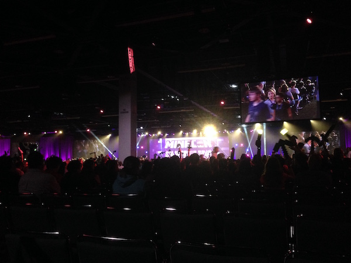
So it was in Anaheim convention center, a giant building that took a full 15 mins to walk from one side to the other. They had the most spectacular air conditioning, on a 38c day, in a room with 500 gaming computers and 1000 people I was cold. The main hall was one big room filled with mineish stuff, I didn't get any pictures but ill find some to link. They had things like a life size Minecraft house you could go in, punchable trees, how to mod stands, Sponge Powered had a stand.. Everyone was going crazy to buy a purple sheep from the merch store for some reason, the queue was 2 hours long.
So I was volunteering with sheep, rsl we did not see much as he was a regular attendee. I was set as an agent team leader, that basically ment it was my job to look after the agents working in a particular area e.g. Getting them to lunch, sorting out any issues, making sure they were not overworked or stressed etc. The room I was working in was the Arena or e-sports room, which ended up having the most agents, I was looking after 20 people at any one time!
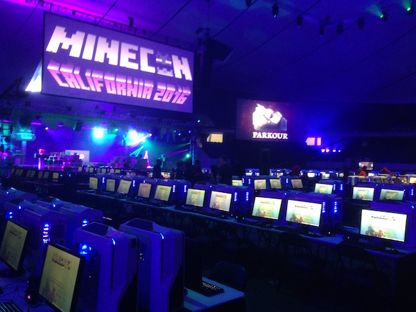
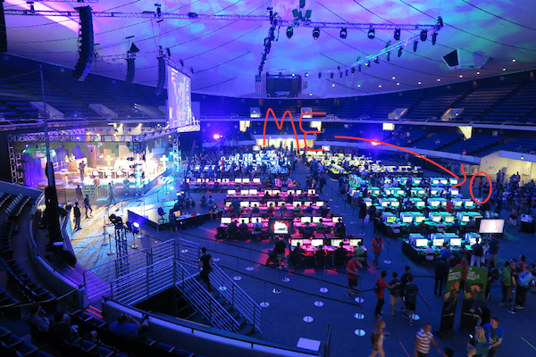
The room was divided into 4 sections for diffrent games so I spent from 11am to 6pm running around to them checking on people, moving people around ect.. I had very sore feet! The first day was chaos.. I was working every second, didn't even get out to have lunch, someone gave me some trail mix to eat :D The second day was a bit easier, we had things more planned and I got out to see things a little, used some of those leader privileges to explore back stage :P
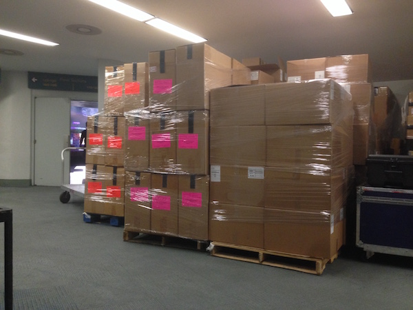
Each one of those boxes contained 10 of my €800 graphics card ;-; You can see the edge of the twitch stage just out the door there. Also they gave me a cool wakitalke to contact the general agent head Kaylee or the other team leaders.
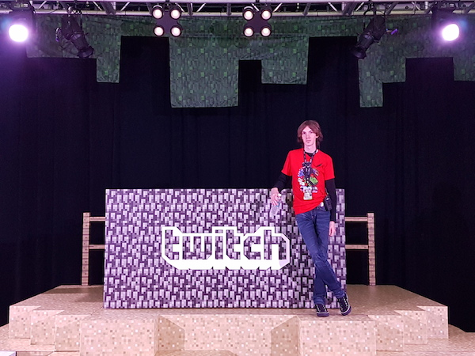
To be honest I really didn't have any time to experience the convention, but at the same time I'm not sure I would have particularly enjoyed doing that, being a part of it was much more fun, if exceptionally tiring. By the end of the second day I was totally burned out and in a very bad mood. Iv recovered a bit now, but I still feel that as volunteers we went a bit unappreciated. For example they would not get us water bottles for people working in the arena, we had to send people off to drinking fountains which I just felt was unfriendly. That and the people from Hypixel who ran the arena computers and games who I had been helping and working with for 14 hours over the course of the weekend never even bothered to say thank you or bye to me, they basically ignored us at the end.
All of those complaints though are to do with the upper management of it and the way Microsoft and others organised things, it felt very impersonal, which maybe should be expected. As for the other agents its a totally diffrent story, everyone I was working with was really interesting and nice, sure there were a few upsets but no ones perfect, and I absolutely would like to keep up with all of them. Everyone who was in the arena with me put in a crazy amount of work and effort.
So with that said, would I do Minecon again... Yes and No, Yes just to meet up with some of the other agents who were there, but No because.. the best bit of it was the agents. I think I would do other smaller conventions where the volunteers have more importance. That said, Im really glad to have done this one.. Is Minecon the best convention? No not by a long shot.. Im still gonna give that prize to Akumakon in Galway :P I think Jeb should just come to Akumakon next year. Anyway here are some other random pictures.
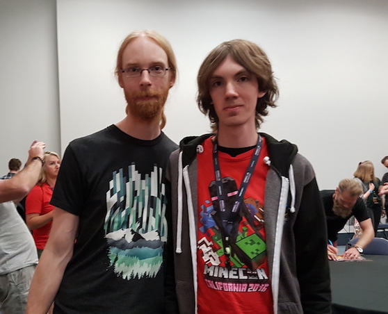
Me and Jeb (Current Minecraft lead)
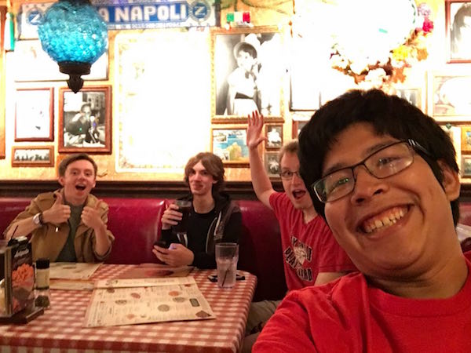
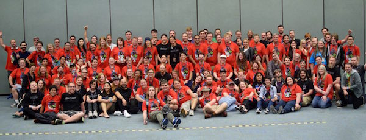
Big Agent group photo which im sure I have my eyes closed in so Im glad its small...
Anyway I might add stuff to this as it comes back to me, for now Im trying to get to terms with San Francisco, so stay tuned for more updates!
Day 10 - Bad
Bad day, bad day. Glasses got stolen, missed flight. Sheep and rsl found their hotel was in the place with the highest rate of homicide in the world, the taxi driver told them not to leave their room. I eventually made it to the hostel, they transferred over to the hostel too. We got ramen.
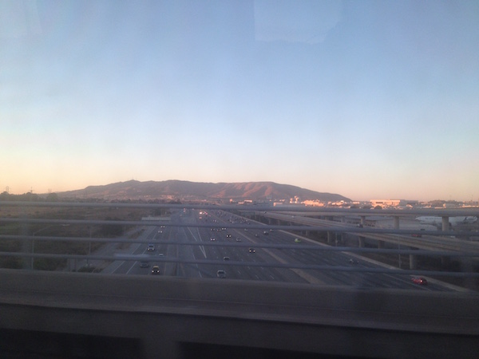
Day 11 - Japantown, Golden Gate and Chinatown
So first order of business was Japantown, its ok! Not a whole lot more to say, its a small area with Japanese shops, but honestly they were not as good as the ones in Vancouver. We headed to the golden gate after that and it was crazy foggy, we saw nothing so I gotta go back there! Was kinda moody though, you could hear ships under it with their fog horns going off.
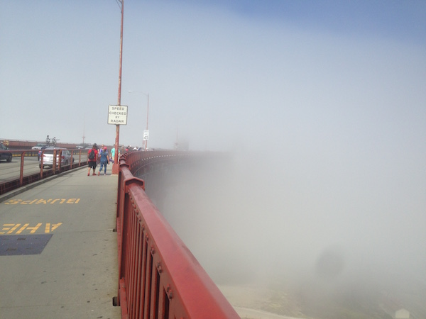
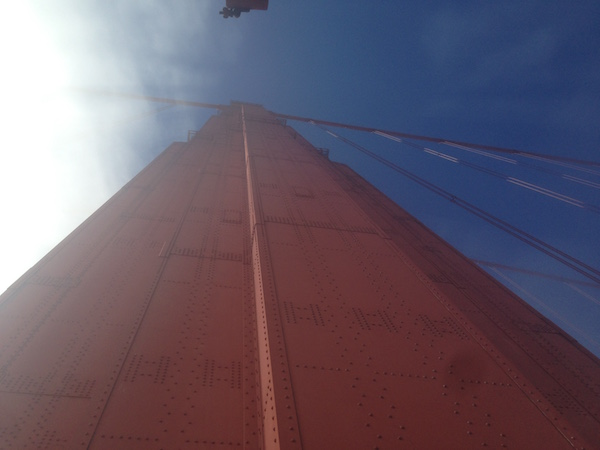
After that we went to Chinatown, its very cool, the deeper you go in the more it becomes just Chinese people and the more authentic the shops get. Its a really fun place to just wander around. I got a possibly fake/possibly real coin there.
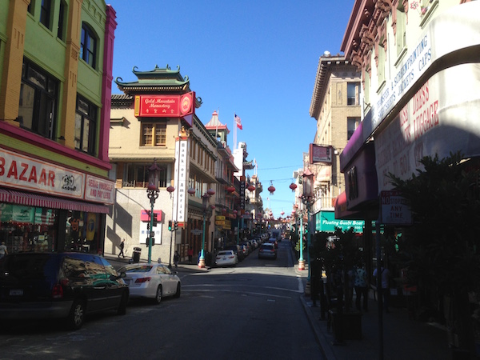
I was not feeling so great, and everyone was tired so we took it easy that evening and got some ice cream and a Chinese. There was also a super creepy puffafish in the Chinese that became a mini meme!
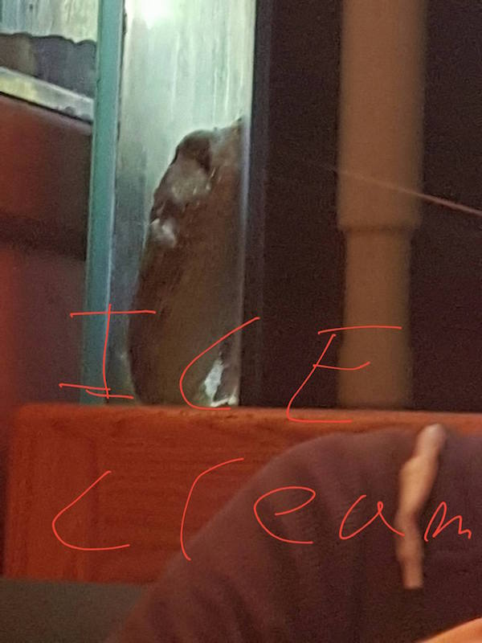
Day 12 - Mountain View and Palo Alto
I was feeling much better today, still have a cold but its not getting in my way today! We got up earlyish and headed for the Nasa Ames Research Center. And.. well.. when they say Nasa is under funded.. omg you cannot imagen how. The vistor center was a dome stead in an empty car park. With a few bits of moon rock and space suits which were pretty cool. The gift shot was half out of stock and the guy gave up trying to find the stuff I wanted and just let me into the back room to pick from what was left in shelves that were in total disorder.
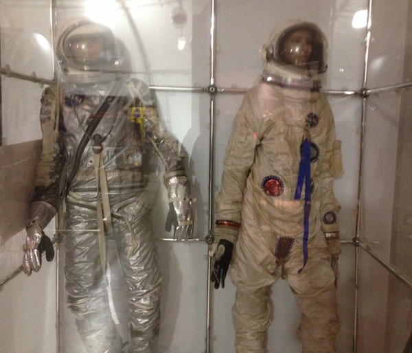
So after that we walked into what appeared to be a semi disused air force base where they had the largest wind tunnel in the world which we did not get to see. Instead we showed our ID's to a guard and he told us to keep walking and not leave the path or we would get shot, and after about 15 mins we ended up in this totally legit little air force museum.
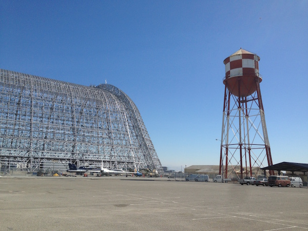
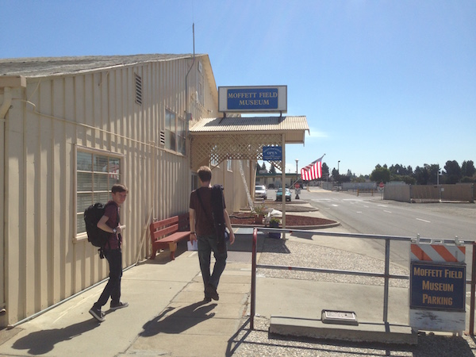
Inside was lots of air force stuff, mostly from 1930-1970, a bunch of old veterans were going around showing each other stuff and there was an indian family who did not go in but their son went in.
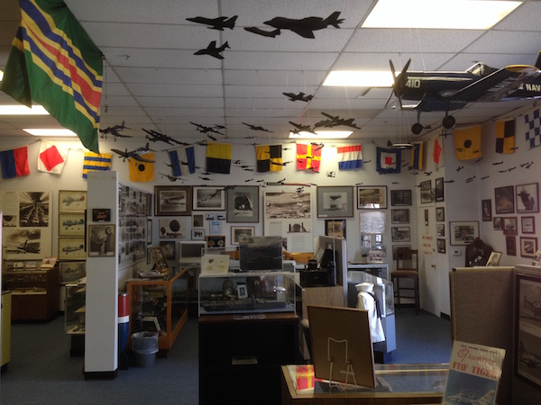
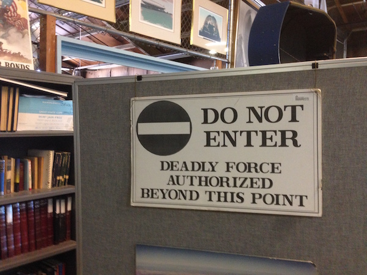
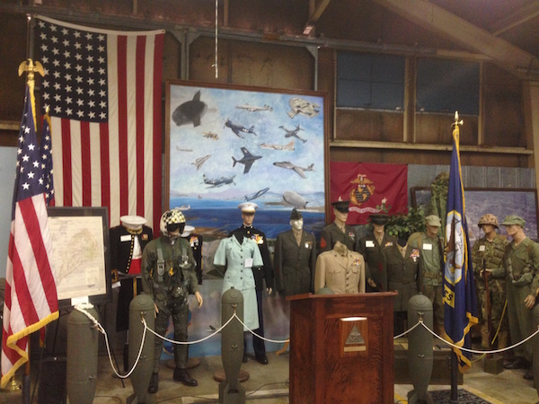
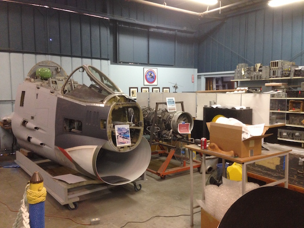
They had a fenced off bit outside with a bunch of old jets from the 1960s, we asked if we could go see them. An older man in a cap showed us around and was very enthusiastic about the misiles and gateling gun on an attack helicopter. There was also a spy plane that had been used during the cuban missile crisis and could fly at 80 thousand feet and if it slowed down or sped up more than 5mph it would loose control at that altatude. Also one of the Blue Angels aircraft that was missing its engins.
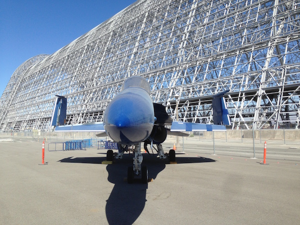
The hanger in the background was used to build airships in the 1930s, It was going to be demolished in 2008 but Google bought it. The covering material was toxic and was removed for poisoning local water. It will probably be replaced at some point.
So after that we went to an In-n-Out burger place, which was perfect, it was like the 50s had never ended, reasonably sized portions, clean bright red and white design, every seat filled, every car outside was a big American brand or a Tesla. The burger was ok too. Also the milkshake tasted like Minos used to.
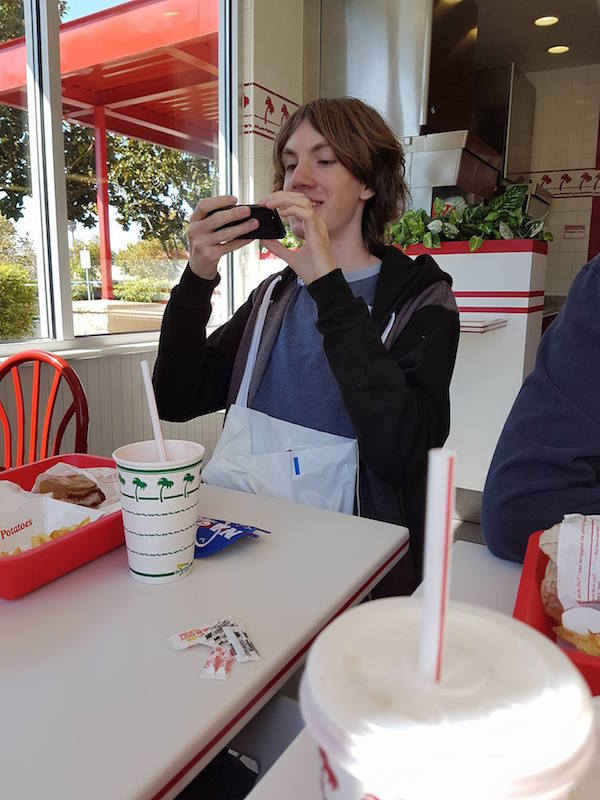
After that I convinced rsl and sheep to go to the Computer History Museum, and it was pretty amazing. They had a bunch of old guys who knew how to operate the punch card computers and got me to type my name out on a console punch card mater thing and ran it though a big main frame and printed out a think saying I had been there.
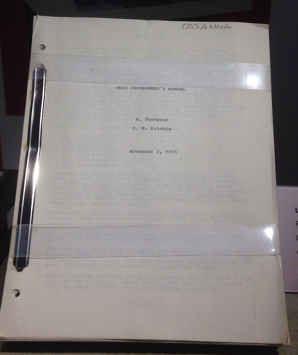
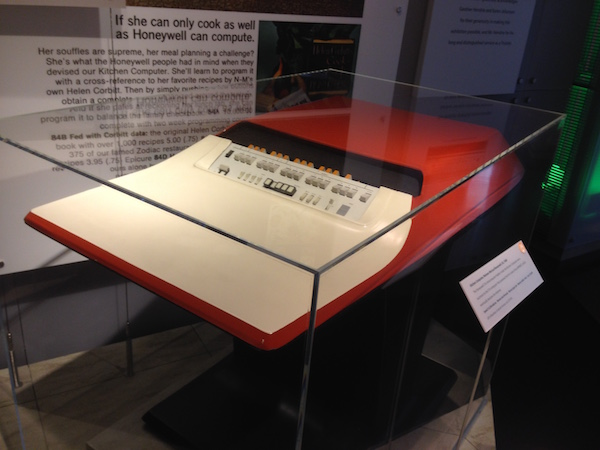
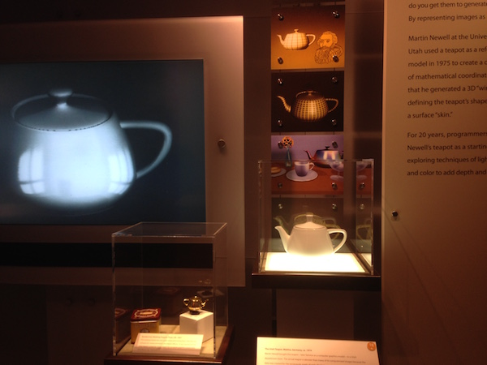
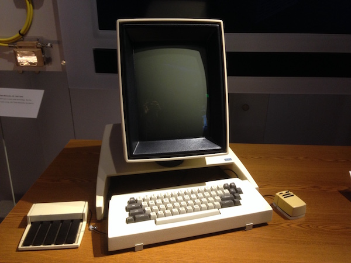
In order: Thats the Unix Manual, the manual for the OS that every morden Mac and Linux computer is modeld off. The kitchen PC that was almost the first home computer to use what would one day become the Internet. The actual kettle that the first ever 3d digital object was created from, I even used that model in my final year project. The Xerox computer that basically invented the modern computer in 1974.
After that we went to the Google HQ, LOOK A REAL SELF DRIVING CAR ACTUALY DRIVING ON ITS OWN DOWN THE STREET JUST LIKE CASUALY DRIVING WITH NO STEERING!
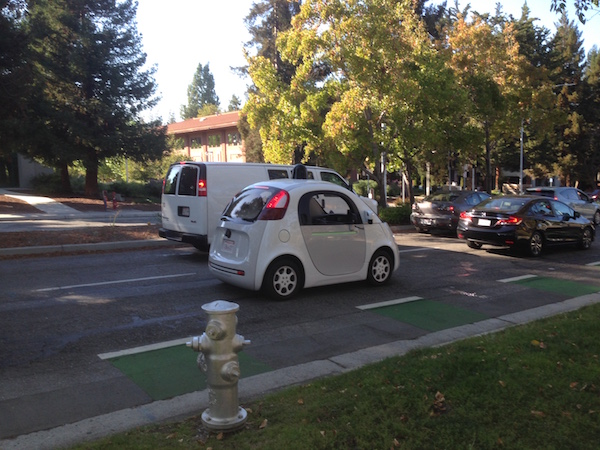
Ehem.. Googleplex was very cool, we walked in and a random guy was like "Hey are you visiting here, wana go see the dinosaur?!" So we went to see the dinosaur, then we wandered around a bit and took some pictures, it was very casual, and almost rundown, but nicely rundown, the grass was a bit unkempt, there was an old shed across the road, it felt like a place where you could really do stuff. We also spent allot of money in their gift store...
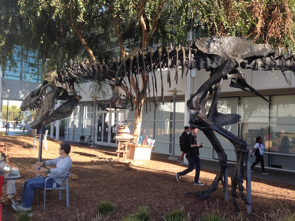
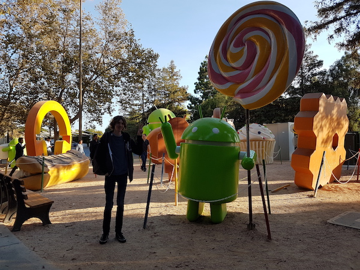
After that was braved rush hour traffic to Cupertino and the Apple HQ. Yeh.. Apple HQ.. Its a big wall of glass, with no apple logo and lots of people dressed in sharp shirts with slick back hair, the door has a security guard who just looks at you like he knows he onna turn you away instantly. They do have a small shop, but apparently it no longer sells Apple merch and now just sells the regular apple store stuff, so we didn't go in. It felt very cold and inhuman so we left and went to a steak house instead. They are building a new one so that might be better.
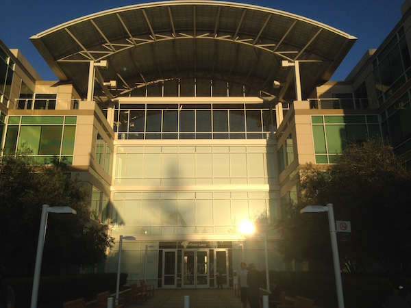
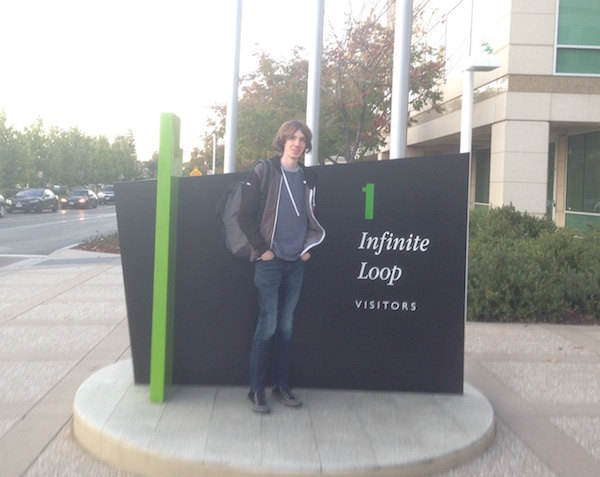
Anyway, it was a good day, Im sad sheep and rsl are leaving for Hollywood tomarrow. We have had allot of fun, heres all the loot I got!
 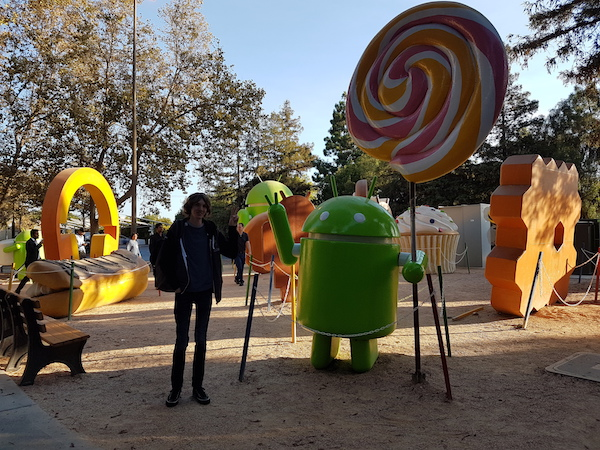
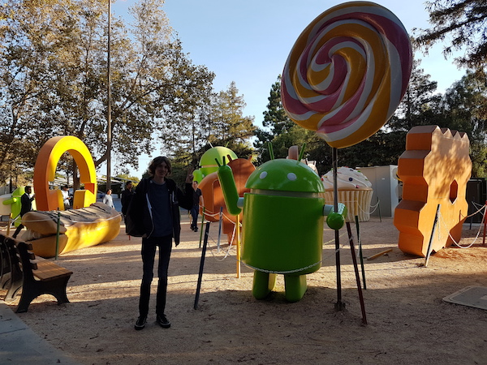